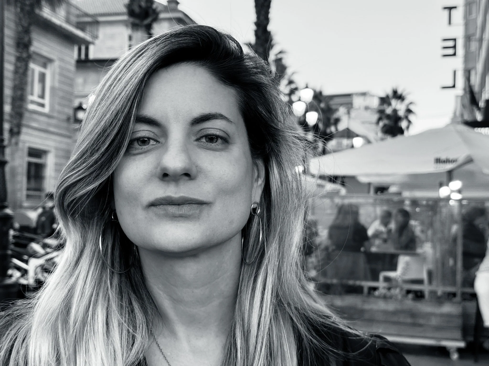
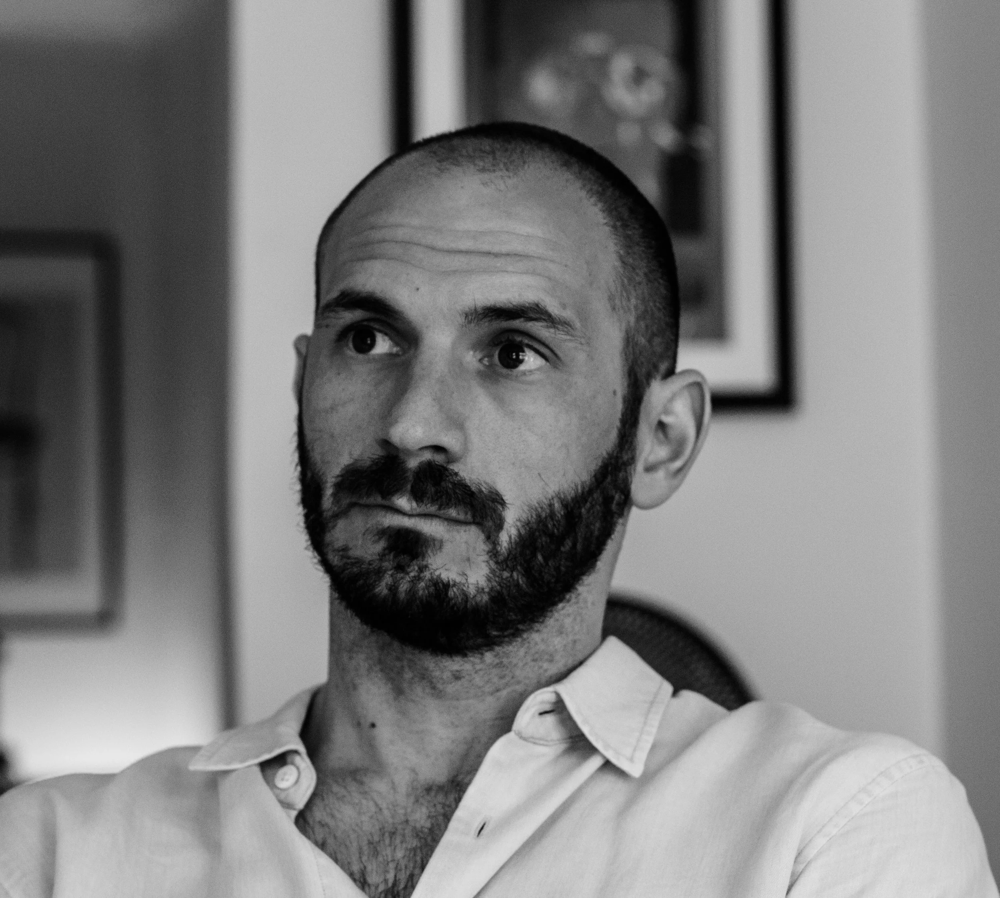
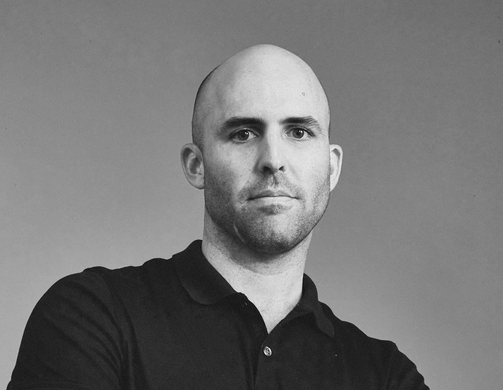

Make Unit Education
The Vertical Leap
Writing · Production · AI · Real-Time · Growth
Becoming a full-stack filmmaker for vertical drama. The industry has moved vertical — shorter formats, faster interaction, AI acceleration throughout the pipeline. This is how you get ahead of it.
Get in touch →︎$8.4B
Global vertical drama market by 2031 (from $4.17B in 2024)
45min
Average daily engagement per session on vertical drama platforms
40M+
Users on dedicated vertical drama platforms globally
The Opportunity
Vertical drama is the new IP laboratory.
Low cost, fast testing, immediate audience feedback. A vertical series lets you build a world, find your audience, and prove your concept before committing to a full production. The most successful genre is some version of telenovelas — a language with a long-standing tradition in the Latin community, now exploding globally through mobile-first platforms.
Disney+ announced mobile vertical video integration at CES 2026. The window is open.
Curriculum
Four pillars. One complete pipeline.
01
Writing
- Vertical drama structure
- Hooks & super hooks
- Melodrama techniques
02
Producing
- The production cycle
- Full-stack toolkit
- Vertical budgets
03
Brand Building
- Brand development
- Audience acquisition
- Extended universe
04
AI Collaboration
- Pitch decks & story expansion
- Teaser production
- AI-driven marketing plans
Instructors
Industry practitioners, not academics.

Luz Orlando Brennan
Director · Writer · Producer
Award-winning filmmaker. La Estrella que Perdí — Best Feature, Cine Las Américas 2025. Credits: El Prófugo (Berlinale), Dior (Annecy). ENERC and UBA.

Ezequiel Asnaghi
Producer · Writer · Actor
Founder of Make Unit. 20+ years in entertainment. Game of Thrones VR (HBO/Framestore, Emmy-nominated), Science Museum London, Google Creative Lab.

Matthias Metternich
Brand Builder
Former CEO of Kiala (top greens brand on TikTok & Amazon). Co-founded Art of Sport with Kobe Bryant. Algorithms, influencers, affiliates, retail scaling.
Carina Haller
Global Marketing Specialist
Co-producer, LA Brazilian Film Festival (18 seasons). Warner Bros.: Barbie, Dune, Minecraft. World of Warcraft, Pac-Man.
Ready to make the leap?
Get in touch to learn about the next cohort, pricing, and dates.
hello@makeunit.com